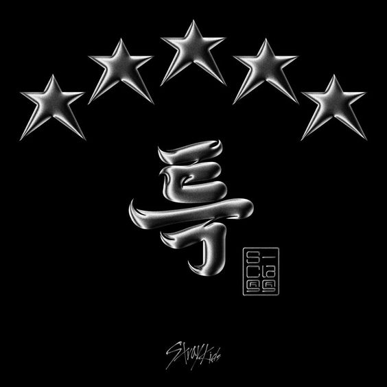
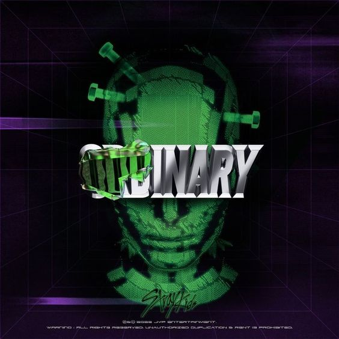
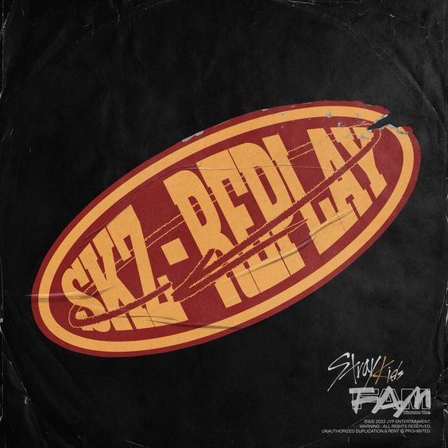
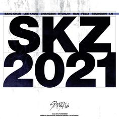
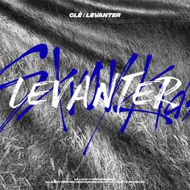
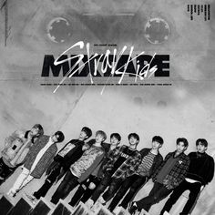

<3 sobre o grupo <3
quem e o stray Kids?
Stray Kids (hangul: 스트레이 키즈), estilizado SKZ, é um grupo de kpop masculino sul-coreano. Foi criado pelo integrante Bang Chan, líder e produtor do grupo, sob o selo da JYP Entertainment através do reality show homônimo, exibido em 2017. O grupo é formado por Bang Chan, Lee Know, Changbin, Hyunjin, Han, Felix, Seungmin e I.N. Lançaram seu primeiro miniálbum I am NOT, no dia 26 de março de 2018. O nome do fandom é STAY.
<3 Albums <3

5 stars
5-Star (estilizado como ★★★★★ ) é o terceiro álbum de estúdio em coreano (quarto no geral) da boy band sul-coreana Stray Kids . Foi lançado em 2 de junho de 2023, pela JYP Entertainment e Republic Records , seguindo seu sétimo EP Maxident (2022). Uma combinação de hip hop , pop eelementos eletrônicos , 5-Star liricamente aborda temas de singularidade, confiança e aspirações.

the sound
The Sound é o primeiro álbum de estúdio em japonês e o terceiro no geral da boy band sul-coreana Stray Kids. Centrado em um tema de orquestra e no conceito musical único do grupo, o álbum é composto por dez faixas, precedidas por " Scars ", as versões japonesas de " Thunderous " e " Case 143 ", e a faixa-título .
Maxident
Uma junção de "máximo" ou "máximo" e "incidente" ou "acidente", o EP viu a banda assumir um conceito de "amor" pela primeira vez. O álbum foi escrito e produzido principalmente por 3Racha, ao lado dos outros membros e produtores do grupo Raphael, Daviid, Yosia, Tak, 1Take, Kim Park Chella, Hong Ji-sang, Earattack, Chan's e Darm. É composto por oito faixas, incluindo o single principal " Case 143 " e a versão coreana de " Circus ", originalmente do EP japonês da banda de mesmo nome .
Circus
Circus é a segunda peça estendida (EP) em japonês ( décima no geral ) da boy band sul-coreana Stray Kids .Centrado em um conceito circense com elementos de hip hop , trap , rock e pop , o EP é composto por seis faixas, precedidas pela versão japonesa de " Maniac ", " Your Eyes ", e a faixa-título .

Ordinary
Oddinary é a sexta peça estendida e a nona no geral gravada pela boy band sul-coreana Stray Kids . Uma mistura de "estranho" e "comum", Oddinary representa "todos nós que temos algo estranho sobre nós mesmos" e o conceito "coisas estranhas logo se tornará comum".

Skz-replay
SKZ-Replay é o terceiro álbum de compilação da boy band sul-coreana Stray Kids .Composto por 25 faixas, o álbum se divide em dois lados: o lado A contém dez músicas, oito solo e duas tocadas pelo grupo como um todo, e o lado B inclui quinze músicas originais de sua série de vídeos SKZ- Player e SKZ-Record .

skz2021
SKZ2021 é o segundo álbum de compilação da boy band sul-coreana Stray Kids . É composto por quatorze faixas que o grupo havia lançado anteriormente, mas versões regravadas compostas por sua formação atual, que não foram incluídas em seu álbum de compilação anterior, SKZ2020 (2020), bem como a versão coreana de " Scars ", que serve como seu single principal .

Go Live
Go Live (estilizado em letras maiúsculas ; coreano : GO生; RR : Gosaeng ) é o primeiro álbum de estúdio do boy group sul-coreano Stray Kids.O single principal , "God's Menu", foi lançado no mesmo dia. A edição de reedição do álbum, intitulada In Life (estilizado em letras maiúsculas; coreano : IN生; RR : Insaeng) foi lançado em 14 de setembro de 2020, junto com oito novas faixas, incluindo o single principal "Back Door".

In Life
A edição de reedição do álbum, intitulada In Life (estilizado em letras maiúsculas; coreano : IN生; RR : Insaeng) foi lançado em 14 de setembro de 2020, junto com oito novas faixas, incluindo o single principal "Back Door".

all In
All In (estilizado em letras maiúsculas ) é a primeira peça estendida japonesa (oitava no geral) do boy group sul-coreano Stray Kids . O single principal "All In" foi lançado em 20 de outubro. [2] Este EP também inclui as versões japonesas de "God's Menu" e "Back Door". [3] [4] e single lançado anteriormente, " Top ".
skz2020
SKZ2020 é o primeiro álbum de compilação da boy band sul-coreana Stray Kids .Este consiste em vinte e sete faixas que o grupo havia lançado anteriormente, mas versões regravadas consistindo em sua formação atual, após a saída de Woojin do grupo no final de outubro de 2019.

Cle: Levanter
Clé: Levanter (estilizado como Clé: LEVANTER ) é a quinta peça estendida (sexta no geral) doboy group sul-coreano Stray Kids O EP gerou três singles . Seu primeiro single , "Double Knot", foi lançado em 9 de outubro de 2019, seguido por "Astronaut" em 14 de novembro de 2019, e a faixa-título "Levanter" no mesmo dia da data de lançamento do EP.
Clé 1 : MIROH
Clé 1: Miroh (estilizado como Clé 1: MIROH) é o quarto EP do grupo sul-coreano Stray Kids. O EP será lançado digitalmente e fisicamente em 25 de março de 2019, pela JYP Entertainment e distribuído pela Iriver Inc. O lançamento do álbum será lançado em conjunto com o primeiro aniversário de estreia do grupo.
Clé 2: Yellow Wood
Clé 2: Yellow Wood é o primeiro álbum especial e a quinta peça estendida do boy group sul-coreano Stray Kids . O álbum consiste em três novas canções, incluindo o single "부작용 (Side Effects)", ao lado de todas as quatro canções "Mixtape", disponíveis anteriormente apenas nos lançamentos físicos em CD de seus quatro EPs anteriores. Este é o último lançamento com o ex-membro Woojin, após sua saída no final de outubro de 2019.

I Am Who
I Am Who (estilizado como I am WHO) e o segundo extended play (EP) grupo sul-coreano Stray Kids. O EP foi lançado digitalmente e fisicamente em 6 de Agosto de 2018 pela JYP Entertainment e distribuído através de Iriver. Teve um showcase com o nome de Stray Kids Unveil: Op. 02: I Am Who um dia antes do lançamento do EP.

I Am You
I Am You (estilizado como I am YOU) é o terceiro EP do grupo sul-coreano, Stray Kids. O EP foi lançado digitalmente e fisicamente no dia 22 de outubro de 2018 pela JYP Entertainment e distribuído pela Iriver Inc. Um showcase intitulado Stray Kids Unveil: Op. 03: I Am You foi realizado no dia anterior ao lançamento do EP no Olympic Hall. O álbum vendeu 76.547 cópias físicas no mês de outubro.

I Am Not
I Am Not (estilizado como I Am NOT) é o extended play (EP) de debut do grupo sul-coreano Stray Kids. O EP foi lançado digitalmente e fisicamente em 26 de Março de 2018 pela JYP Entertainment e distribuído através de Iriver. Teve um showcase com o nome de Stray Kids Unveil: Op. 01: I Am Not um dia antes do lançamento do EP.

Mixtape (EP)
Mixtape é um extended play de pré-estreia do grupo masculino sul-coreano Stray Kids. O EP foi lançado digitalmente e fisicamente no dia 8 de janeiro de 2018 pela JYP Entertainment e distribuído pela Genie Music. É composto por sete faixas, todas produzidas no programa de sobrevivência do mesmo nome do grupo, Stray Kids. O álbum vendeu 45.249 cópias físicas em janeiro.